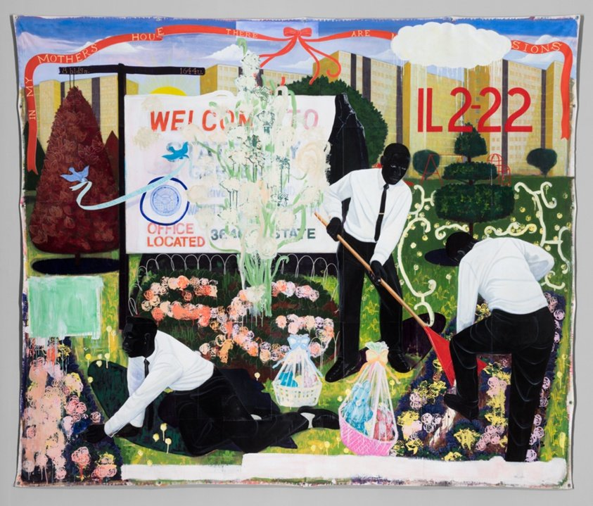

Many Mansions
Kerry James Marshall · 1994 · Acrylic on paper mounted on canvas · 289.6 × 342.9 cm · Art Institute of Chicago
In copyright. Look and learn: shown for study, not for download.
Many Mansions is the first of five large paintings Kerry James Marshall made of public housing projects in Chicago and Los Angeles named gardens; this one shows Stateway Gardens in Chicago. It is acrylic on paper mounted on canvas, nearly three metres high and three and a half wide. The title, on the red ribbon at the top, varies a line from the Gospel of John. The Art Institute bought it from Jack Shainman Gallery in July 1995, the year after it was painted, and it went to Documenta X in Kassel in 1997.